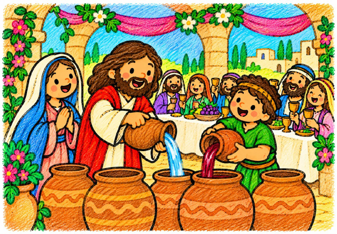
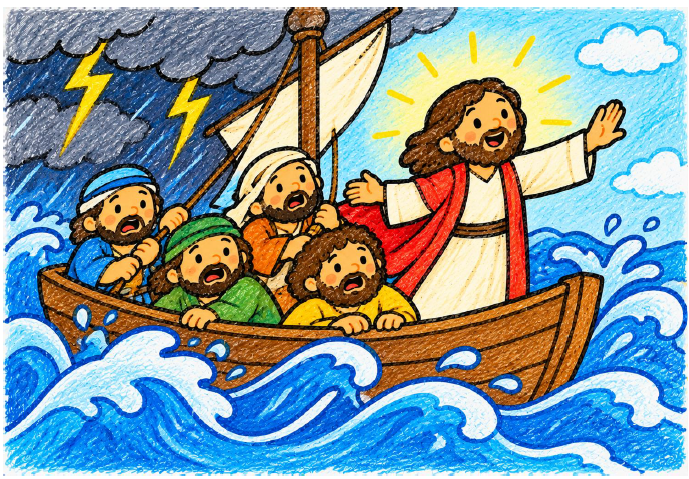
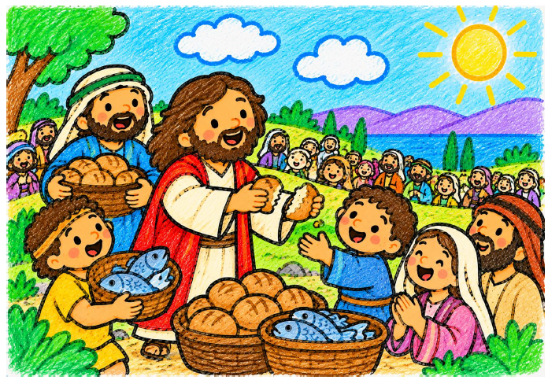
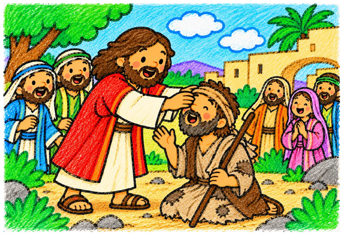

La Boda de Caná
Aprendemos a confiar en Jesús como María, y hacemos lo que nos dice para compartir su alegría con los demás.
📄 Abrir PDF
Jesús calma la tempestad
Aprendemos a confiar en Jesús incluso cuando tenemos miedo o pasamos por momentos difíciles.
📄 Abrir PDF
Los panes y los peces
Jesús da de comer a una gran multitud y nos enseña la importancia de compartir.
📄 Abrir PDF
Jesús cura a Bartimeo
Jesús escucha a Bartimeo y nos enseña a acercarnos a quienes necesitan ayuda.
📄 Abrir PDFJesús cura a diez leprosos
Descubrimos la importancia de dar las gracias por el bien que recibimos.
📄 Abrir PDF